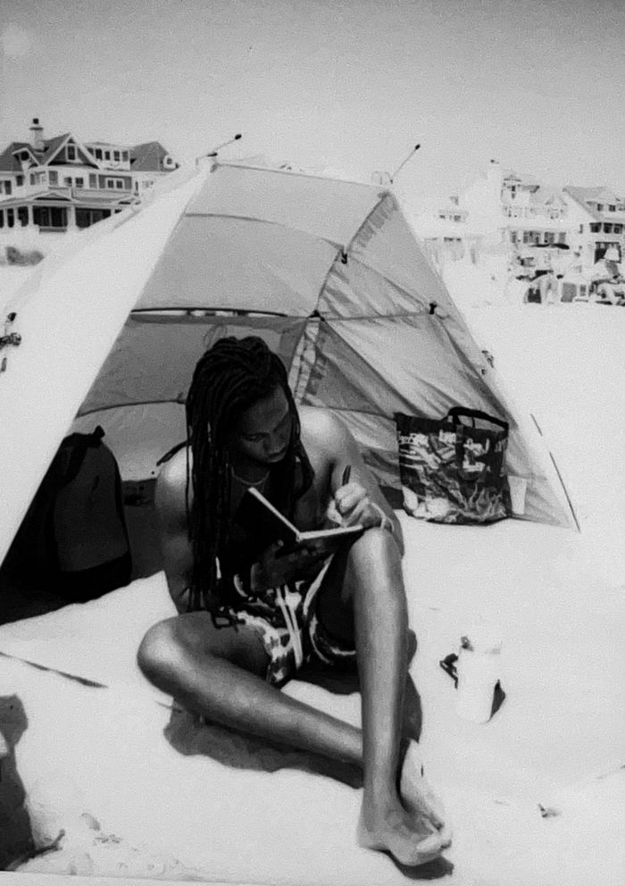

Feb 15, 2026 · Rothschild Toussaint
Writing my Wrongs.
I feel as if I am ready to share my thoughts with the world. I cannot control the reception, but I'm doing it for me. Thank you for reading. May the InI that lives within you and me unite us forever.
Reading my old poems makes me a bit sad that I don’t write with my hands as much although these days I have more to say than ever before. Feeling compelled to write, I pick up this brown book, and now I’ve put it in this digital format to reach you (Hi!). See, this is far different than my journal. Whereas the revelation of my journal is often laced with vitriol, regret, love, euphoria, lust, nihilism, triumph, and enigma, this is my refuge from my own words.
The words that touch me, that creep inside of my skin, that lurks around the corner of unresolved feelings that manifests itself into echoes of a fragmented me, pieces of my peace scattered in places where I left too early, stayed too late, or perhaps, made an uninvited appearance. So I resort to what I do best. Convey an image. Release my inner self, the better me. I can liberate myself, but prison is more controlled.
I guess I’m writing because I am tired. Tired of the ebbs and flows of my racing mind. Tired of fighting a certain reality that I deeply wish was different. So I write with my pen. With my hand. The most direct way I can connect to my inner self, the InI, the Rothschild who is far more clairvoyant than I am.
So I write. For the times I’ve held my tongue when the truth suffocated me. For the times I breathed life into an abyss where my light flickers and dies for I could sustain the borders I was given. I write. For the white mountains. The piercing eyes. The allure of the allure. I find my joy back in writing. You see, It’s how I learned to love out of the comfort of kin. It’s why people love me, I think. My writing touches my soul, and since we are a linked spirit, it touches You as well. I am not a God, I am just made in His message. Yet, I sometimes turn away. My writing does not always soothes or woozes oohs and ahhs. My writing also kills. The beautiful thing with my words is that I can unload the clip without worrying about running out. My breath is my ammo. My words are my ammo. I shoot to kill. I write to protect. I shoot for fun. I write to reflect. My words are a weapon and I love it. Everything around me is worth writing about. The mundane to the spectacular. For the spectacular exists in the mundane. Life itself. The Wow factor.
I write because writing for me has no hidden agenda, no feelings to spare, nobody to impress. My writing is, and will always be, formless, timeless, priceless, and open.

I write because I love and I hurt. Because I grieve and council with manipulating language. I write because I’m the one that demands answers and questions. I write because I say the wrong the thing. I write because my thoughts go left. I write because it reminds me of the truest form of love. A love that I’ve built overtime with myself. I write because when I could say nothing, I wrote. I write because it’s how I truly therapise. You see, there’s no co-pay with my writing, at least not one that is monetary. But every time I bear my soul, that in itself is costly. Because when I read my truth on paper, I would be lying if it did not affect me.
My writing connects me to the zeal of falling in Love. I hope I can love one day the way I write, but I doubt it. For the way I write, I could never open my heart up like this. When I write, I don’t force an outcome. I don’t flutter, I don’t please everybody. If at old age, it’s just me and my pen, then I’d still be fulfilled. Because even when I am not, I can still write about my regrets.
Writing reminds me why I was born, why my ancestors chastise me when I fall off-course, why I believe my Father is alive because he lives through me. I wrote his name, therefore he lives. I give Life. I am Life. My words are Life. I am often wrong, but I always write. There, I can’t be wrong. There’s no debates. Only reasoning. I just want to write. Just WRITE. I write for the long conversations and fleeting interactions, for everybody I’ve ever loved. I write because I live. I write because here, my words are perfect. No clock, just words that ring through time. I’m safe here. Always will be.
Thank you,
Rothschild Johnny “Roky” Toussaint